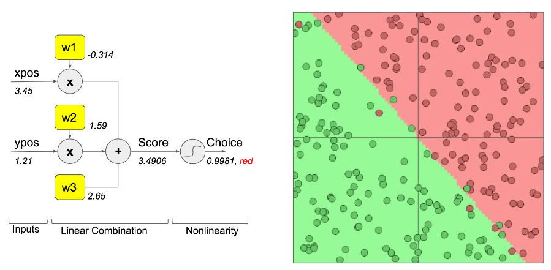
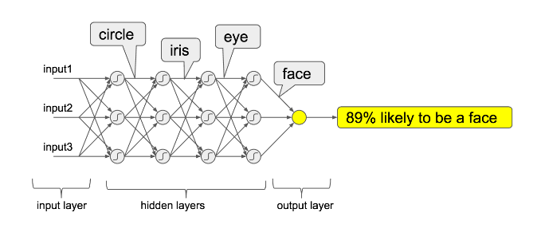
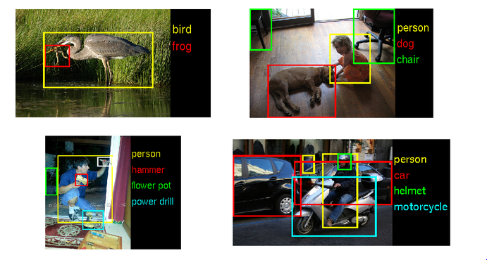
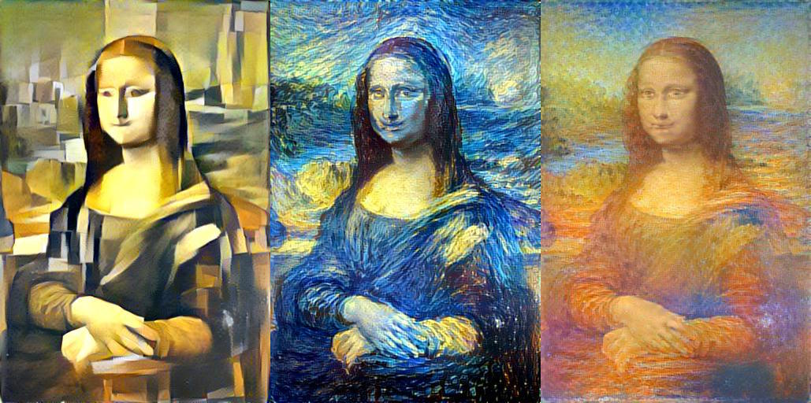

name: inverse layout: true class: center, middle, inverse --- ### Lab SC - Pelatihan Machine Learning #Introduction to Keras & Deep Learning .footnote[Slides and notebooks bisa diakses di GitHub: [github.com/gggdomi/keras-workshop](https://github.com/gggdomi/keras-workshop)] --- layout: false background-image: url(slides-resources/keras-logo.jpg) .left-column[ ## Outline hari ini, 5 Mei 2017 ] .right-column[ <br/><br/><br/> 1. Introduction : Neural Networks and Deep Learning 2. Keras dan Framework Deep Learning Lainnya 3. Instalasi Keras 4. Klasifikasi citra (gak nyampe 100 baris) menggunakan Keras - Data loading - Model definition, training and evaluation - Metode data augmentation - Memanfaatkan a pre-trained network ] --- template: inverse # 1. Introduction : # Neural Networks # and Deep Learning --- background-image: url(slides-resources/keras-logo.jpg) # Neural networks a.k.a JST  --- background-image: url(slides-resources/keras-logo.jpg) # Deep Learning .center[ Lebi banyak lapisan = abstraksi yang lebih baik  *Skema dari suatu deep neural network* ] --- # Deep Learning Bisa Apa? - [Alphago](https://deepmind.com/research/alphago/) - Object detection :  --- # Deep Learning Bisa Apa? - [Wavenet](https://deepmind.com/blog/wavenet-generative-model-raw-audio/) : Generate speech which mimics any human voice and which sounds more natural than the best existing Text-to-Speech systems - Style transfer :  --- template: inverse # 2. Keras # dan Framework Deep Learning Lainnya --- background-image: url(slides-resources/keras-logo.jpg) # Masalahnya ### Model deep learning itu... -- - ...makin hari makin kompleks -- - ...makin tinggi resource komputasi yang dibutuhkan -- - ...makin banyak data dibutuhkan untuk pelatihan -- ### Kita butuh framework yang efisien dan memiliki abstraksi di level yang tinggi <-- ? --- background-image: url(slides-resources/keras-logo.jpg) .left-column[ ### Problem ### Most popular frameworks ] .right-column[ ### Dozens of frameworks are available : - [Theano](http://deeplearning.net/software/theano/index.html) - Tingkat rendah - [TensorFlow](https://www.tensorflow.org/) - Tingkat rendah - [Torch](http://torch.ch/) - Mirip dengan Keras - Menggunakan bahasa Lua - [Caffee](http://caffe.berkeleyvision.org/) - [deeplearning4j](http://deeplearning4j.org/) - [Neon](http://neon.nervanasys.com/index.html/) - ... ] --- background-image: url(slides-resources/keras-logo.jpg) .left-column[ ### Problem ### Most popular frameworks ### Why Keras? ] .right-column[ ### Some specifics of Keras : - Berjalan diatas beberapa backend berbeda - Theano, TensorFlow... and more to come - Efisien - ... sama seperti Theano or TensorFlow - komputasi menggunakan GPU - Menggunakan bahasa python - Memiliki abstraksi tingkat tinggi - Mudah digunakan dan mudah dipahami ] --- background-image: url(slides-resources/keras-logo.jpg) .left-column[ ### Problem ### Most popular frameworks ### Why Keras? ### Ease of use and readability ] .right-column[ Code-snippet for a XOR NN : ```python import numpy as np from keras.models import Sequential from keras.layers.core import Activation, Dense from keras.optimizers import SGD X = np.array([[0,0],[0,1],[1,0],[1,1]]) y = np.array([[0],[1],[1],[0]]) model = Sequential() model.add(Dense(2, input_dim=2, activation='sigmoid')) model.add(Dense(1, activation='sigmoid')) sgd = SGD(lr=0.1, decay=1e-6, momentum=0.9, nesterov=True) model.compile(loss='mean_squared_error', optimizer=sgd) history = model.fit(X, y, nb_epoch=10000, batch_size=4) print(model.predict(X)) ``` - [Perbndingan implementasi Keras vs TensorFlow implementation](https://gist.github.com/cburgdorf/e2fb46e5ad61ed7b9a29029c5cc30134) - Deep Compositional Captioning: Describing Novel Object Categories without Paired Training Data - [Paper](https://arxiv.org/pdf/1511.05284v2) - [Implementasi dalam Keras](https://gist.github.com/fchollet/0ecc151189b997fd4400bc2fecf2489f) ] --- template: inverse # 3. Keras Installation --- background-image: url(slides-resources/keras-logo.jpg) ## Keras Installation - [Theano](http://deeplearning.net/software/theano/install.html) : - `pip3 install Theano` - [TensorFlow](https://www.tensorflow.org/versions/r0.10/get_started/os_setup.html#pip-installation) : - `$ export TF_BINARY_URL=...` [[choose link here](https://www.tensorflow.org/versions/r0.10/get_started/os_setup.html#pip-installation)] - `pip3 install $TF_BINARY_URL` [](https://www.tensorflow.org/versions/r0.10/get_started/os_setup.html#pip-installation) - [Keras](https://keras.io/#installation) : - `pip3 install keras` - To enable GPU computing : - [NVidia Cuda](http://www.nvidia.fr/object/cuda-parallel-computing-fr.html) - [CuDNN](https://developer.nvidia.com/cudnn) - [CNMeM](https://github.com/NVIDIA/cnmem) --- layout: true class: center, middle --- # Ready to go ! `import keras` from a python script, notebook or shell --- template: inverse # 4. Image classification # with Keras --- layout: false background-image: url(slides-resources/keras-logo.jpg) ## Classifying dogs vs cats pictures - Kompetisi Kaggle yang dibuka pada tahun 2013 > *"The current literature suggests machine classifiers can score above 80% accuracy on this task"* -- - Leaderboard (dibekukan 2014) - top 100 : 80% accuracy - top 10 : 98% accuracy -- - [Dataset](https://www.kaggle.com/c/dogs-vs-cats/data) : 12,500 citra kucing + 12,500 citra anjing -- - Kita hanya akan menggunakan 1000 citra dari masing-masing kelas (8% dari dataset) --- class: center, middle # Go to the # [notebook](https://github.com/gggdomi/keras-workshop/blob/master/notebook.ipynb) --- template: inverse # Matur nuwun! <br/> Any questions ? [guillaume.dominici@xbrain.io](mailto:guillaume.dominici@xbrain.io) <br/> Slides and notebook available on GitHub : https://github.com/gggdomi/keras-workshop <br/> [ Most important ! ] Keras website : http://keras.io/